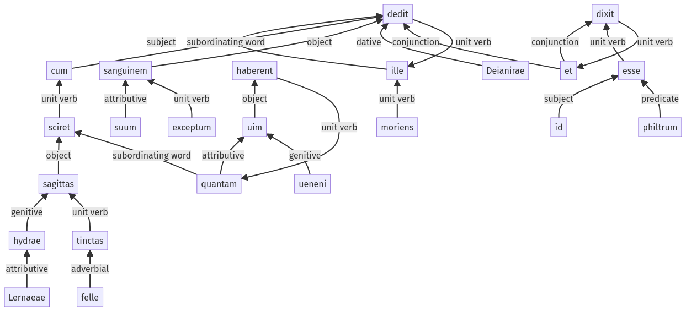

Hyginus, Fabuleer, 34pr.2.1-34pr.2.23a
34pr.1.22-34pr.1.34a | 34pr.2.24-34pr.2.34a
Sentence 468
34pr.2.1-34pr.2.23a
ille moriens, cum sciret sagittas hydrae Lernaeae felle tinctas quantam uim haberent ueneni, sanguinem suum exceptum Deianirae dedit et id philtrum esse dixit;
1 ille
2 moriens
2 cum sciret
3 sagittas hydrae Lernaeae
4 felle tinctas
3 quantam uim haberent ueneni
1 sanguinem suum
2 exceptum
1 Deianirae dedit
1 et
2 id philtrum esse
1 dixit
ille moriens, cum sciret sagittas hydrae Lernaeae felle tinctas quantam uim haberent ueneni, sanguinem suum exceptum Deianirae dedit et id philtrum esse dixit;
Highlighting:
- connecting words
- unit verb
- subject
- object
Color code:
- independent clause (level 1, transitive verb)
- independent clause (level 1, transitive verb)
- indirect statement (level 2, linking verb)
- participle (level 2, intransitive verb)
- participle (level 2, transitive verb)
- subordinate clause (level 2, transitive verb)
- indirect statement (level 3, transitive verb)
- participle (level 4, transitive verb)
